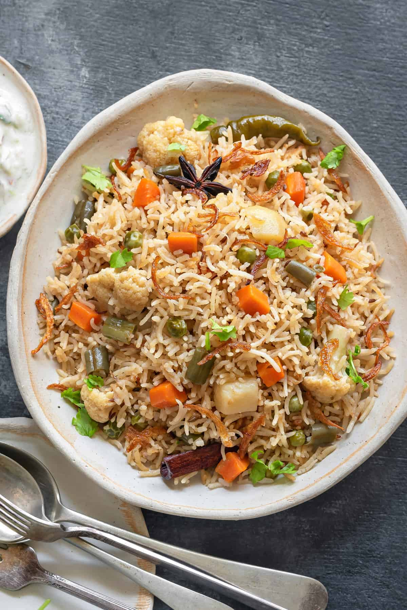
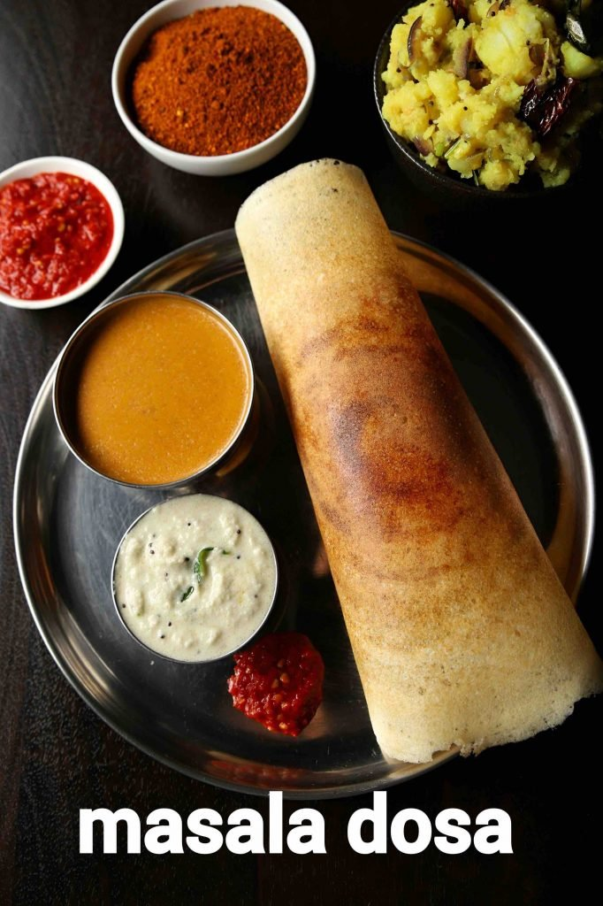

1.Vegetable Pulao:

Pulao or pilaf, is comfort food at its best and I make it when I want
to cook something quick, easy and satisfying. This one-pot dish made
with rice and vegetables has added spices and herbs, giving it a mild
aromatic flavor. This special recipe is my mom’s and is my go-to recipe
when making veg pulao. The dish is also vegetarian and is great on its
own or paired with raita (an Indian yogurt dish),
pickle and roasted papad (a crisp thin Indian snack).
Vegetable Pulao (Veg Pulav) is a spicy rice dish prepared by cooking rice
with various vegetables and spices. In this recipe, assortment of spices,
veggies and rice are first sautéed in oil and ghee and then cooked in pressure
cooker as you would cook plain rice. However, the uniqueness of this easy mixed
vegetable pulao recipe lies in use of bay leaf, cinnamon and cloves which provides
nice and complex aromatic feel that simply makes juices flowing in mouth.
2.Masala Dosa :

Masala dosa recipe | crispy masale dose | how to make masala dosa with
detail photo and video recipe. an easy and popular, tasty south indian
staple breakfast recipe made with rice and urad dal. basically an extension
to the traditional dosa recipe, where dosa is made crisp and stuffed with
potato masala. it is perhaps one of the famous dishes from south india,
which is can be served for morning breakfast or also as an evening snack
with coconut chutney and sambar.
masala dosa recipe | crispy masale dose | how to make masala dosa with step
by step photo and video recipe. south indian recipes are known for healthy
and steamed rice-based breakfast recipes. these generally fall into either
the dosa or idli category which in turn has many varieties with subtle variations.
under the dosa category, the most popular variation is masala dosa or locally known
as masale dose served with achoice of coconut chutney and spicy sambar.